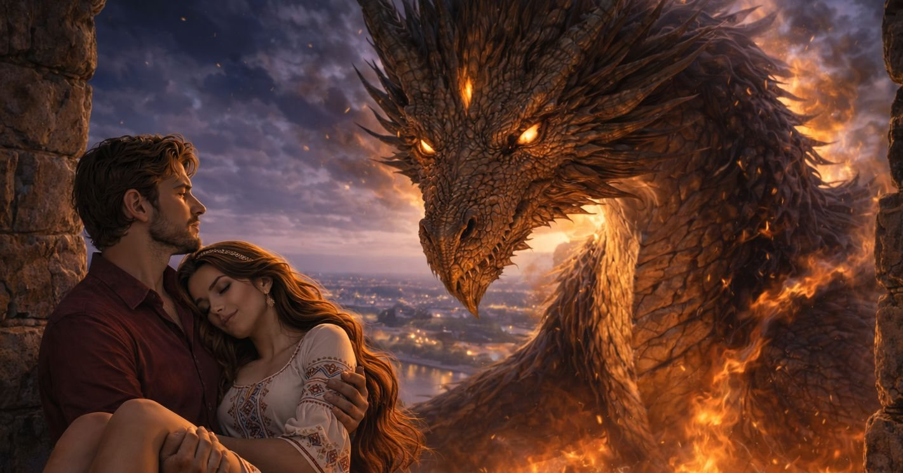

Поглавље 30: Крај хаоса и почетак љубави
Página individual del capítulo con lectura y ejercicios.

Луис се враћа у своју нормалну величину, исцрпљен, али пуним олакшања. Његово тело је прекривено прашином и малим ранама од битке, али у његовим очима се види одлучност и мир. Он стоји на крову Куле Небојша, гледајући како се Београд полако буди из хаоса. Град је у рушевинама, али у ваздуху се осећа олакшање, као да је невиђена тежина коначно скинута са рамена свих становника.
Наташа прилази Луису, њено лице је пуним суза, али и захвалности. Она га грли, осећајући како јој се срце мири уз његово. "Луис, ти си спасио Београд," шапуће му у уво, њен глас је тужан, али пуним наде. "Ти си мој херој."
Луис је грли и љуби у чело. "Нисам могао да дозволим да униште твој град, Наташа. Београд је твој дом, а ти си моја љубав."
Он узима преостала камења која су остала на крову куле. Камења су мала, али пуна енергије, као да су жива. Луис их држи у рукама, осећајући како му се прсти тресу од напрезања. "Ово је крај," каже он, пуним одлучности. "Неће бити више Часа дивљака. Београд је слободан."
Са пуним снагом, Луис баца камења на земљу. Они се разбијају у хиљаде комадића, а затим се распадају у прах. Енергија која је била заробљена у њима ослобађа се у ваздуху, стварајући малу светлосну експлозију која се рашири по граду. Људи који су се још увек борили са хаосом почињу да долазе себи, изненађени и збуњени, али захвални што је све готово.
Наташа гледа како се прах камења рашири по ваздуху, као мала магична киша. "То је крај," шапуће. "Час дивљака је заустављен."
Луис је грли јаче. "Да, Наташа. Али ово је само почетак. Београд ће се опоравити, а ми ћемо бити ту да га заштитимо."
Марина и Катарина прилазе Луису и Наташи, њихови изрази су пуним кајања и поштовања. Марина, која је још увек држала руку око врата где ју је Наташа угризла, гледа их пуним одушевљења.
"Хвала вам што сте нам дали прилику да исправимо наше грешке," каже Марина, њен глас је тих, али пуним искрености. "Извините због лошег почетка. Нисмо знали шта радимо."
Катарина, која је била спремна да пуца у Луиса транквилајзером, сада стоји поред Марине, пуним поштовања. "Идемо у Аргентину, као што си предложио, Луис," каже она. "Можда тамо нађемо своју судбину."
Луис се осмехне, осећајући како му се срче олакшава. "Имам још један захтев пре него што одете," каже он, пуним одлучности.
Марина и Катарина га гледају пуним интересовања. "Шта је то?" пита Марина.
Луис узима Наташину руку и гледа је пуним љубави. "Желим да будете сведоци мом предлогу за брак," каже он, његов глас је пуним емоција.
Наташа га гледа пуним шока, али и одушевљења. "Луис, шта говориш?" пита она, њен глас је пуним неверице.
Луис је љуби у чело. "Наташа, ти си љубав мог живота. Хоћеш ли да постанеш моја супруга?"
Наташа, пуним суза, одговара: "Да, Луисе! Хоћу!"
Марина и Катарина их гледају, пуним одушевљења. "Честитамо вам!" каже Марина, њен глас је пуним искрености. "Ви сте сада вереници."
Катарина се осмехне. "Желимо вам све најбоље. Можда ћемо се једног дана вратити да видимо како вам иде."
Луис и Наташа их грле, осећајући како је њихова веза јача од икада. Рускиње се опраштају и крећу ка новој авантури у Аргентини, док Луис и Наташа остају у Београду, спремни да заједно граде своју будућност.
Луис води Наташу и рускиње до Саборне цркве Светог Архангела Михаила, места где је Наташа желела да јој предложи брак. Црква је и даље у добром стању, упркос хаосу који је захватио град. Њене зидине су пуним историје и лепоте, а унутрашњост је мирна и света.
У цркви, Луис проналази свој цртеж где је Софија била јахач. Али примећује нешто неочекивано – цртеж се променио. Уместо Софије, сада су он и Наташа на слици, венчани и веома срећни.
Наташа схвата: "Луисе, ти црташ са магијом!"
Луис (клекне пред Наташом): "Наташа, ти си љубав мог живота. Хоћеш ли да постанеш моја супруга?"
Наташа, пуним суза, одговара: "Да, Луисе! Хоћу!"
Рускиње их гледају, пуним одушевљења. Марина: "Честитамо вам! Ви сте сада вереници." Катарина: "Желимо вам све најбоље." > Дивљи час: Луис и Наташа излазе из цркве, држећи се за руке. Београд је и даље у поправци, али они знају да је најгоре прошло. Град је жив, а људи почињу да се враћају својим кућама, осећајући како је хаос коначно завршен.
Наташа: "Луисе, ти си спасио мој град и моје срце."
Луис: "А ти си ми дала разлог да верујем у љубав и магију."
Рускиње се опраштају и крећу ка новој авантури у Аргентини, док Луис и Наташа остају у Београду, спремни да заједно граде своју будућност.
Луис и Наташа су сада вереници, а Београд је поново мирно место. Иако су прошли кроз многе изазове, њихова љубав је јача од икада. Час дивљака је заустављен заувек, а њихова прича је постала легенда која ће се причати генерацијама.
Крај.